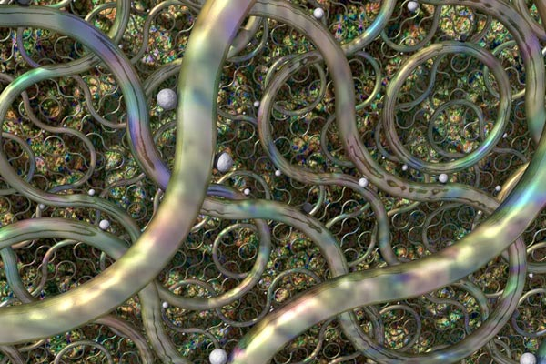
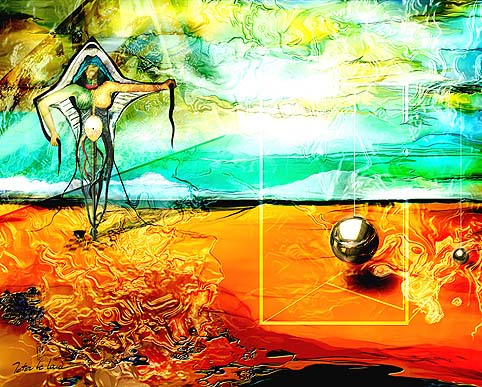
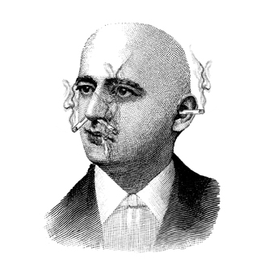
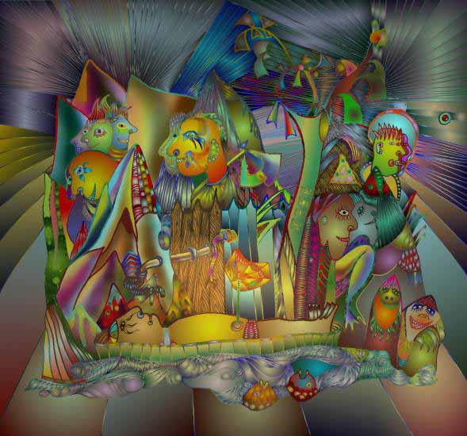

IMAGES OF THE DAY 103
04/21/2024 - 04/30/2024

04/21/2024
Mixed Technique
On the Surreal Side
Pathways
by Robert M. McGregor
Click image to access artist's full exhibit
04/22/2024
Mixed Technique
Illustrative
Flying
by Tom McKeith
Click image to access artist's full exhibit


04/23/2024
Mixed Technique
Digital Paintings
Thyroide
by Peter Mc Lane
Click image to access artist's full exhibit
04/24/2024
Mixed Technique
Digital Brush Painting
Childhood Dream
by Pavel Melnichuk
Click image to access artist's full exhibit

04/25/2024
Mixed Technique
Holocaust Portfolio
Tet
by Martin Mendelsberg
Click image to access artist's full exhibit
4/26/2024
Mixed Technique
Cyber Tools and Effects
Untitled.8jpg
by Romesh Mistry
Click image to access artist's full exhibit

04/27/2024
Mixed Technique
Compromised
The Measure
by JP Paul
Click image to access artist's full exhibit


04/28/2024
Mixed Technique
Twenty Four Days in the Life of an Icon
Twenty Four
by Pojucan
Click image to access artist's full exhibit

04/29/2024
Mixed Technique
Computer Graphics
Travel
by Afanassy Pud
Click image to access artist's full exhibit
04/30/2024
Mixed Technique
Reproductions of Nonexistent Paintings
The Wanderer Above the Sea of Mist by Caspar David Friedrich
by Vladimir Rankovic
Click image to access artist's full exhibit